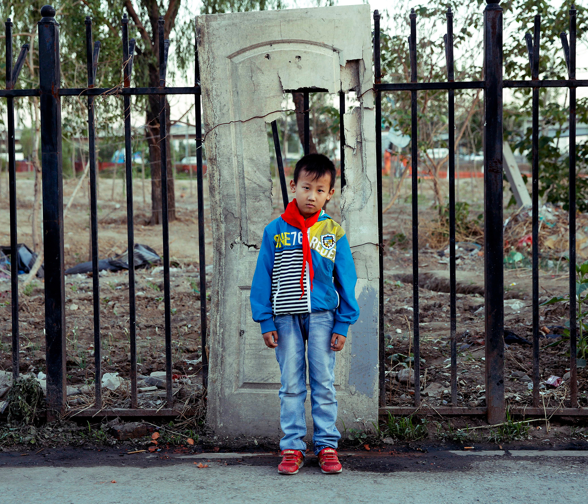
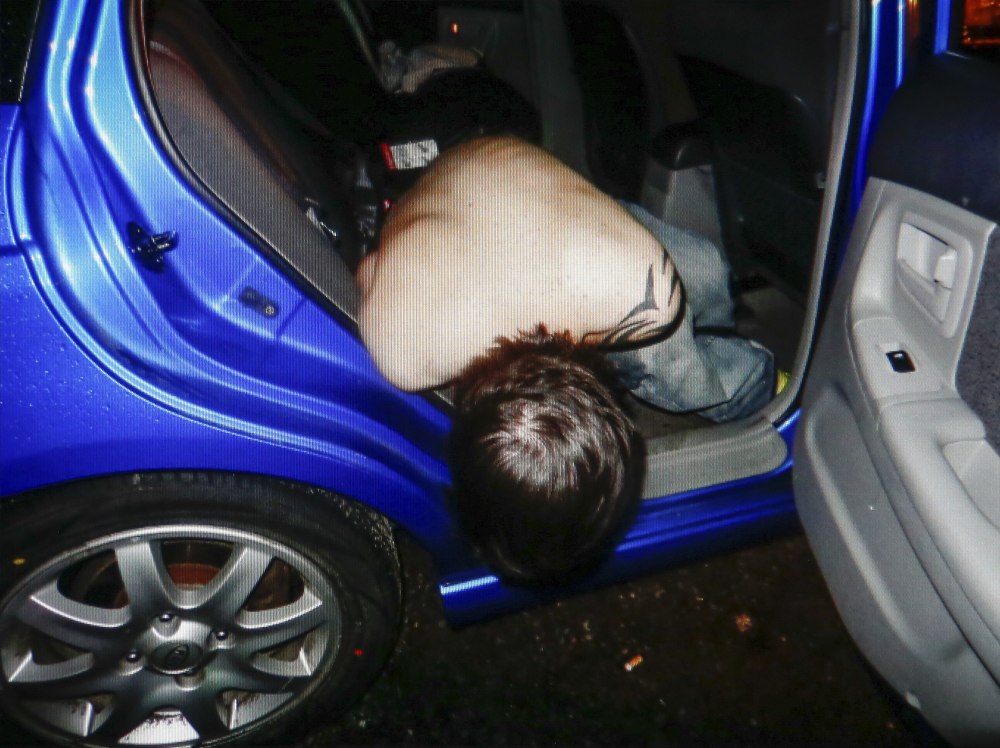

Tianqiutao Chen
Series One
Aspirations of Migrant Children
Series Two
The Last Post
Tianqiutao Chen is an artist and educator working in both China and the United States. He received an MFA in Photography and an MA in Art + Design Education from Rhode Island School of Design (RISD)and his work has been shown nationally and internationally, including the Center for Photography at Woodstock, Beijing Minsheng Art Museums and the Taipei International Photo Festival. Chen’s project Aspirations of Migrant Children created in Beijing was awarded Discovery of the Year, from International Photography Awards China in 2014. His recent body of work The Last Post won the Lucie Photobook Prize in the Independent Category in 2017.